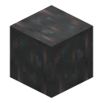
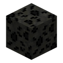
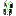

Summary#
| Structure | ID | Dimension / biomes | How common | Contains |
|---|---|---|---|---|
| Norse Village | infinity:norse_village | Overworld | One per world |  Tesseract Tesseract |
| Sanctum Sanctorum | infinity:sanctum | Overworld | One per world |  Eye of Agamotto Eye of Agamotto |
| Sanctuary | infinity:sanctuary | The End | One per world |  Scepter Scepter |
| Aether Chamber | infinity:aether | Svartalfheim, underground | One per world |  Aether, Malekith Aether, Malekith |
| Morag Temple | infinity:morag_temple | Morag, ocean floor | One per world |  Orb, arrow traps Orb, arrow traps |
| Vormir | world feature | Vormir, fixed position | One | The Soul Guardian |
| Infinity Temple | infinity:infinity_temple | Overworld, any biome | Common | Loot chest, Temple Beacon |
| Crashed Kree Ship | infinity:crashed_kree_ship | Overworld, plains | Uncommon |  Cosmi-Rod Cosmi-Rod |
| Dwarf Star Meteor | infinity:dwarf_star_meteor | Overworld, any biome | Very common |  Dwarf Star Meteor |
| Uru Meteor | infinity:uru_meteor | Svartalfheim | Very common |  Uru Ore |
Every structure can be found with /locate structure <id> while you're in its dimension. There are no screenshots of the
structures on this wiki yet; the descriptions come from the structure files.
Stone structures#
The five stone structures use the same placement as strongholds: exactly one per world, at a random angle on a ring around 0, 0. Distances are approximate and measured from the world origin.
Norse Village#
A small Norse church (15 × 24 × 23) in the Overworld, about 18,500–35,300 blocks from the origin. Dark oak signs and a
lectern tell its story; the Tesseract hangs in an invisible item frame. It's "the Jewel of Odin's Treasure Room", hidden in a Norwegian church.
Sanctum Sanctorum#
Doctor Strange's sanctum (36 × 36 × 25) in the Overworld, about 7,300–14,000 blocks from the origin. The
Eye of Agamotto stands on an armor stand inside.
Sanctuary#
Thanos's domain (38 × 31 × 41), generated on the End's outer islands about 7,300–14,000 blocks from the origin. The
Scepter is displayed in a glow item frame.
Aether Chamber#
A large buried chamber (56 × 118 × 57) starting deep underground around Y −60 on Svartalfheim, about
4,400–8,400 blocks from the origin. The Aether sits in a glow item frame, guarded by
Malekith, the dark elf: a husk with his own model, 100 health, 20 armor and 10 toughness, permanent Speed VI,
Strength VI and Resistance III, wielding Malekith's Sword. He's a real fight; bring armor and a plan.
Morag Temple#
The submerged temple from Guardians of the Galaxy (71 × 28 × 34), on the ocean floor of Morag, about 18,500–35,300 blocks
from the origin. Two rows of dispensers loaded with Arrows of Harming VII guard the hall. The Orb rests on an
armor stand.
Vormir#
Vormir's cliff and altar aren't a normal structure: they're built piece by piece, one template per chunk, always at the same place on
Vormir, covering X 0–271 and Z 0–191 from Y 63 up. The Soul Guardian stands at about 212 121 99 and is
spawned once per world. See the Soul Stone for its trades.
Worlds that built Vormir with an earlier version of the mod keep their existing Vormir and Soul Guardian; the new placement doesn't duplicate them.
Decoys#
Sanctum, Norse Village, Sanctuary, Aether Chamber and Morag Temple each have a fake twin (*_fake) with the
same building but nothing in the frame or on the stand. Fakes are rare (1% chance per 100-chunk region) and can appear anywhere their
biome allows. Check the distance from the origin if you find one close to spawn.
Other structures#
Infinity Temple#
A small temple (11 × 7 × 11) found all over the Overworld (one every 42–67 chunks, 69% chance). In the middle is a
Temple Beacon that shines a beam into the sky without needing a pyramid, so you can spot temples from far away.
Its chest always has 1–4  Aspects of Existence, plus 4–8 rolls of ores, ingots, diamonds, emeralds, golden apples,
Palladium metals, the mod's own metals and sometimes
Aspects of Existence, plus 4–8 rolls of ores, ingots, diamonds, emeralds, golden apples,
Palladium metals, the mod's own metals and sometimes
Crashed Kree Ship#
A small crashed ship (24 × 8 × 7) in plains biomes (one every 50–100 chunks, 20% chance). Its chests are a joke ("Haha empty chests ;)");
the real prize is the Cosmi-Rod in an invisible item frame.
Dwarf Star Meteor#
A small crater (14 × 7 × 13) with Dwarf Star Meteor blocks, common across the Overworld (every 40–80 chunks, 95% chance).
Uru Meteor#
The same crater shape on Svartalfheim, made of Svartelheim Stone with veins of Uru Ore.